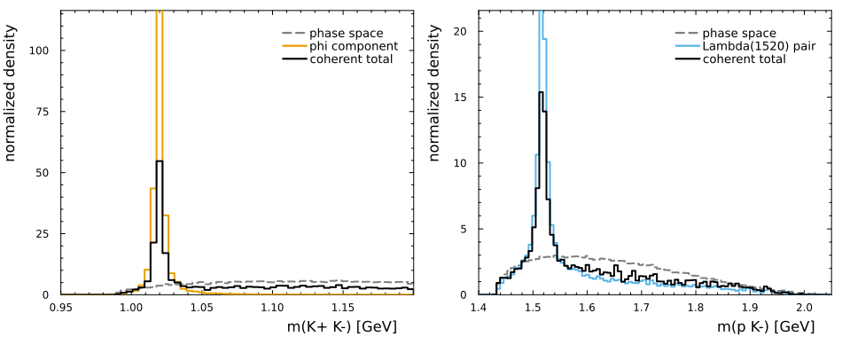
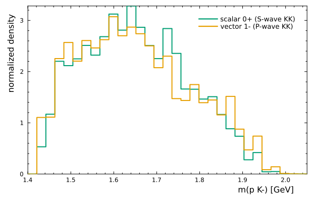

A pp to pp K+ K- amplitude model
This tutorial constructs a compact amplitude model for
\[pp \to p_1\,p_2\,K^+\,K^-, \qquad \sqrt{s}=3.5\ \mathrm{GeV}.\]
It contains exactly three labeled chains:
\[\phi(1020)\to K^+K^-,\qquad \Lambda(1520)\to p_1K^-,\qquad \Lambda(1520)\to p_2K^-.\]
The two $\Lambda(1520)$ copies are written explicitly and use the same complex coupling. RamboOnDiet supplies flat four-body phase space; the model intensity supplies the event weight.
At this energy, the scattering is expected to proceed mostly through $t$-channel exchange. It therefore does not populate a single production partial wave, but a range of them. Nonetheless, to keep this first model small, we select one effective $0^+$ production partial wave. A realistic production model can add the other partial waves as extra coherent chains without changing the event-generation code.
1. User inputs
All numbers that one normally changes are collected in three named tuples. Masses and widths are in GeV.
using CascadeDecays
using DataFrames
using FourVectors
using HadronicLineshapes
using LinearAlgebra: Hermitian
using Plots
using Random
using RamboOnDiet
using ThreeBodyDecays:
@jp_str,
OverlapContribution,
fit_fractions,
interference_terms,
total_intensity
theme(:boxed)
function show_table(table)
io = IOBuffer()
context = IOContext(io, :displaysize => (100, 120))
show(context, table; allrows=true, allcols=true, truncate=0)
text = String(take!(io))
println(join(rstrip.(split(text, '\n')), '\n'))
end
const particles = (
proton=0.9382720813,
kaon=0.493677,
)
const resonances = (
phi=(mass=1.019461, width=0.004249),
lambda1520=(mass=1.5195, width=0.0156),
)
const settings = (
sqrt_s=3.5,
n_events=50_000,
seed=0x3500,
c_phi=2.0 + 0.0im,
c_lambda1520=5.0 + 0.0im,
)
@assert settings.sqrt_s > 2particles.proton + 2particles.kaon
nothingFinal-state labels are fixed once and used everywhere below:
| label | particle | $J^P$ |
|---|---|---|
1 | $p_1$ | $1/2^+$ |
2 | $p_2$ | $1/2^+$ |
3 | $K^+$ | $0^-$ |
4 | $K^-$ | $0^-$ |
| root | effective $pp$ partial wave | $0^+$ |
quantum = SystemSpinParities(
"1/2+", # p1
"1/2+", # p2
"0-", # K+
"0-"; # K-
jp0="0+",
)2. The three explicit topologies
CascadeDecays uses binary trees. The partner of the physical isobar is therefore represented by a constant nonresonant subsystem:
\[(p_1p_2)_{0^+}\]
is the ${}^1S_0$ partner of the $\phi$;\[(pK^+)_{1/2^-}\]
is an S-wave partner of the $\Lambda(1520)$.
These partners close the binary tree but add no mass-dependent resonance.
topology_phi = DecayTopology(((1, 2), (3, 4)))
topology_lambda_p1 = DecayTopology(((1, 4), (2, 3)))
topology_lambda_p2 = DecayTopology(((2, 4), (1, 3)))
topologies = (
topology_phi,
topology_lambda_p1,
topology_lambda_p2,
)
channel_table = DataFrame(
channel=["phi", "Lambda(1520): p1 K-", "Lambda(1520): p2 K-"],
resonant_pair=["(K+, K-)", "(p1, K-)", "(p2, K-)"],
topology=collect(bracket_notation.(topologies)),
)show_table(channel_table)3×3 DataFrame
Row │ channel resonant_pair topology
│ String String String
─────┼───────────────────────────────────────────────────
1 │ phi (K+, K-) ((1,2),(3,4))
2 │ Lambda(1520): p1 K- (p1, K-) ((1,4),(2,3))
3 │ Lambda(1520): p2 K- (p2, K-) ((2,4),(1,3))3. Lineshapes and angular momenta
The l keyword in each Breit–Wigner controls its running-width threshold factor. It is 1 for the P-wave $\phi\to K^+K^-$ decay and 2 for the D-wave $\Lambda(1520)\to pK^-$ decay.
unit_lineshape = ConstantLineshape(1.0 + 0.0im)
phi_lineshape = BreitWigner(;
m=resonances.phi.mass,
Γ=resonances.phi.width,
ma=particles.kaon,
mb=particles.kaon,
l=1,
d=1.5,
)
lambda1520_lineshape = BreitWigner(;
m=resonances.lambda1520.mass,
Γ=resonances.lambda1520.width,
ma=particles.proton,
mb=particles.kaon,
l=2,
d=1.5,
)Each propagator is addressed by the same bracket notation as its topology. minimal_ls_decay_chain then chooses the lowest allowed LS coupling at every vertex.
propagators_phi = (
(1, 2) => Propagator(jp"0+", unit_lineshape),
(3, 4) => Propagator(jp"1-", phi_lineshape),
)
propagators_lambda_p1 = (
(1, 4) => Propagator(jp"3/2-", lambda1520_lineshape),
(2, 3) => Propagator(jp"1/2-", unit_lineshape),
)
propagators_lambda_p2 = (
(2, 4) => Propagator(jp"3/2-", lambda1520_lineshape),
(1, 3) => Propagator(jp"1/2-", unit_lineshape),
)
chain_phi = minimal_ls_decay_chain(topology_phi, quantum, propagators_phi)
chain_lambda_p1 = minimal_ls_decay_chain(
topology_lambda_p1,
quantum,
propagators_lambda_p1,
)
chain_lambda_p2 = minimal_ls_decay_chain(
topology_lambda_p2,
quantum,
propagators_lambda_p2,
)The selected local couplings are doubled integers (2L, 2S). In particular, the two resonance decays are
\[\phi\to K^+K^-: (2L,2S)=(2,0),\qquad \Lambda(1520)\to pK^-: (2L,2S)=(4,1).\]
@assert last(minimal_vertex_couplings(
topology_phi,
quantum,
propagators_phi,
)).second == (2, 0)
@assert minimal_vertex_couplings(
topology_lambda_p1,
quantum,
propagators_lambda_p1,
)[2].second == (4, 1);4. Explicit labeled-proton sum
The requested coherent amplitude is
\[\mathcal A = c_\phi\,\mathcal A_\phi +c_\Lambda\,\mathcal A_{\Lambda(p_1K^-)} +c_\Lambda\,\mathcal A_{\Lambda(p_2K^-)}.\]
The repeated settings.c_lambda1520 below is the explicit tying of the two $pK^-$ assignments. No automatic permutation helper is involved.
model = CascadeDecay(
(chain_phi, chain_lambda_p1, chain_lambda_p2),
topology_phi;
couplings=(
settings.c_phi,
settings.c_lambda1520,
settings.c_lambda1520,
),
names=(
"phi->K+K-",
"Lambda(1520)->p1K-",
"Lambda(1520)->p2K-",
),
)
model_phi = model[[1]]
model_lambda = model[[2, 3]]show(model)CascadeDecay with 3 chains on ((1,2),(3,4)):
name coupling topology
phi->K+K- 2.0 + 0.0im ((1,2),(3,4))
Lambda(1520)->p1K- 5.0 + 0.0im ((1,4),(2,3))
Lambda(1520)->p2K- 5.0 + 0.0im ((2,4),(1,3))This is a same-sign labeled sum, exactly as written above. CascadeDecays does not insert a fermion-exchange sign automatically. If a later production convention requires an antisymmetrized proton state, encode its exchange phase explicitly in the two coefficients after fixing the spin and isospin conventions.
5. Flat phase space with RamboOnDiet
The kinematic task contains all three topologies. wigner_finals=(1, 2) aligns the two proton spin axes before amplitudes from different trees are added.
rng = MersenneTwister(settings.seed)
generator = PhaseSpaceGenerator(
[
particles.proton,
particles.proton,
particles.kaon,
particles.kaon,
],
settings.sqrt_s,
)
task = KinematicTask(
topologies;
reference_topology=topology_phi,
wigner_finals=(1, 2),
)
events = [rand(rng, generator) for _ in 1:settings.n_events]
momenta = [Tuple(event.momenta) for event in events]
points = [KinematicPoint(task, p) for p in momenta]
@assert all(isapprox(mass(reduce(+, p)), settings.sqrt_s; atol=1e-10) for p in momenta)
# The explicitly paired Lambda(1520) contribution is unchanged in
# unpolarized intensity when the two proton labels are exchanged.
p = first(momenta)
p_with_protons_exchanged = (p[2], p[1], p[3], p[4])
@assert isapprox(
unpolarized_intensity(model_lambda, KinematicPoint(task, p)),
unpolarized_intensity(model_lambda, KinematicPoint(task, p_with_protons_exchanged));
rtol=1e-10,
);For a flat phase-space event with Jacobian $J_{\rm PS}$, the model weight is
\[w = J_{\rm PS}\sum_{\mathrm{helicities}}|\mathcal A|^2.\]
The separate $\phi$ and $\Lambda(1520)$ weights below are diagnostics. The full model is evaluated coherently and can contain interference.
sample = DataFrame(
m_KK=[mass(p[3] + p[4]) for p in momenta],
m_p1Km=[mass(p[1] + p[4]) for p in momenta],
m_p2Km=[mass(p[2] + p[4]) for p in momenta],
weight_ps=[event.weight for event in events],
)
intensity_phi = unpolarized_intensity.(Ref(model_phi), points)
intensity_lambda = unpolarized_intensity.(Ref(model_lambda), points)
intensity_total = unpolarized_intensity.(Ref(model), points)
sample.weight_phi = sample.weight_ps .* intensity_phi
sample.weight_lambda = sample.weight_ps .* intensity_lambda
sample.weight_total = sample.weight_ps .* intensity_total
@assert all(isfinite, sample.weight_total)
@assert all(>=(0), sample.weight_total);6. Interference matrix
Interference integrals are routine diagnostics even when they are not the main result of an analysis. For two coherent components $A$ and $B$, no new amplitude algebra is needed:
\[I_{AB} = \int d\Phi_4\, \left( |A+B|^2-|A|^2-|B|^2 \right).\]
The Monte Carlo estimator is the same subtraction applied to the three sums of phase-space-weighted intensities. Here the components are the isolated $\phi$ chain and the coherent pair of labeled $\Lambda(1520)$ chains. The merge operation reconstructs their coherent sum while retaining the component names.
components = (model_phi, model_lambda)
component_names = ["phi", "Lambda(1520) pair"]
model_from_components = merge(components...)
@assert model_from_components.names == model.names
component_integrals = [
sum(sample.weight_phi),
sum(sample.weight_lambda),
]
total_integral = sum(sample.weight_total)
interference_integral = total_integral - sum(component_integrals)
# Store half the pair interference in each off-diagonal entry, so summing the
# full matrix gives the coherent integral.
integral_matrix = [
component_integrals[1] interference_integral / 2
interference_integral / 2 component_integrals[2]
]
overlap = OverlapContribution(
component_names,
Hermitian(complex.(integral_matrix), :U),
)
@assert isapprox(total_intensity(overlap), total_integral; rtol=1e-12)
fraction_matrix = 100 .* real.(Matrix(overlap.matrix)) ./ total_intensity(overlap)
interference_matrix = DataFrame(
component=component_names,
phi_percent=round.(fraction_matrix[:, 1]; digits=3),
lambda1520_pair_percent=round.(fraction_matrix[:, 2]; digits=3),
)
show_table(interference_matrix)2×3 DataFrame
Row │ component phi_percent lambda1520_pair_percent
│ String Float64 Float64
─────┼─────────────────────────────────────────────────────────
1 │ phi 31.753 0.004
2 │ Lambda(1520) pair 0.004 68.24The diagonal entries are fit fractions. Each off-diagonal entry is half of the pair interference fraction; consequently all four entries sum to $100\%$. ThreeBodyDecays provides the corresponding labeled summaries once the MC sums have been stored in an OverlapContribution.
fit_fraction_rows = fit_fractions(overlap; sort=false)
interference_rows = interference_terms(overlap; sort=false)
overlap_summary = DataFrame(
contribution=vcat(
["fit fraction: $(row.label)" for row in fit_fraction_rows],
[
"interference: $(row.label_i) x $(row.label_j)" for
row in interference_rows
],
),
percent=round.(
vcat(
getproperty.(fit_fraction_rows, :fraction),
getproperty.(interference_rows, :fraction),
);
digits=6,
),
)
show_table(overlap_summary)3×2 DataFrame
Row │ contribution percent
│ String Float64
─────┼──────────────────────────────────────────────────
1 │ fit fraction: phi 31.7526
2 │ fit fraction: Lambda(1520) pair 68.2398
3 │ interference: phi x Lambda(1520) pair 0.0076757. The two resonance projections
Both $pK^-$ label assignments are filled into the same histogram. Curves are area-normalized so their shapes remain readable when the illustrative complex couplings are changed.
const bins_kk = range(0.95, 1.2, 60)
const bins_pk = range(1.40, 2.05, 100)
function shapehist(values, weights; label, color, linestyle=:solid, bins=90)
return stephist(
values;
bins,
weights,
normalize=:pdf,
label,
color,
linestyle,
linewidth=2,
)
end
p_kk = shapehist(
sample.m_KK,
sample.weight_ps;
label="phase space",
color=:gray,
linestyle=:dash,
bins=bins_kk
)
stephist!(
p_kk,
sample.m_KK;
weights=sample.weight_phi,
normalize=:pdf,
bins=bins_kk,
label="phi component",
color=2,
linewidth=2,
)
stephist!(
p_kk,
sample.m_KK;
weights=sample.weight_total,
normalize=:pdf,
bins=bins_kk,
label="coherent total",
color=:black,
linewidth=2,
)
plot!(p_kk; xlabel="m(K+ K-) [GeV]", ylabel="normalized density")
pK_values = vcat(sample.m_p1Km, sample.m_p2Km)
pK_ps_weights = repeat(sample.weight_ps, 2)
pK_lambda_weights = repeat(sample.weight_lambda, 2)
pK_total_weights = repeat(sample.weight_total, 2)
p_pk = shapehist(
pK_values,
pK_ps_weights;
bins=bins_pk,
label="phase space",
color=:gray,
linestyle=:dash,
)
stephist!(
p_pk,
pK_values;
weights=pK_lambda_weights,
normalize=:pdf,
bins=bins_pk,
label="Lambda(1520) pair",
color=3,
linewidth=2,
)
stephist!(
p_pk,
pK_values;
weights=pK_total_weights,
normalize=:pdf,
bins=bins_pk,
label="coherent total",
color=:black,
linewidth=2,
)
plot!(p_pk; xlabel="m(p K-) [GeV]", ylabel="normalized density")
plot(
p_kk,
p_pk;
layout=(1, 2),
size=(950, 380),
bottom_margin=4Plots.PlotMeasures.mm,
left_margin=4Plots.PlotMeasures.mm,
)
8. Crossed-channel $\phi$ templates
An isolated resonance also produces structure in invariant masses that do not contain its decay pair. To expose this reflection, compare a hypothetical scalar state ($J^P=0^+$, S-wave $K^+K^-$) with the physical vector $\phi$ at the same pole ($J^P=1^-$, P-wave $K^+K^-$). Keeping the mass and width fixed makes the difference in the normalized $pK^-$ projection a spin effect rather than a lineshape effect.
scalar_phi_lineshape = BreitWigner(;
m=resonances.phi.mass,
Γ=resonances.phi.width,
ma=particles.kaon,
mb=particles.kaon,
l=0,
d=1.5,
)
scalar_phi_chain = minimal_ls_decay_chain(
topology_phi,
quantum,
(
(1, 2) => Propagator(jp"0+", unit_lineshape),
(3, 4) => Propagator(jp"0+", scalar_phi_lineshape),
),
)
model_phi_scalar = CascadeDecay(
(scalar_phi_chain,),
topology_phi;
couplings=(settings.c_phi,),
names=("scalar phi-like->K+K-",),
)
intensity_phi_scalar = unpolarized_intensity.(Ref(model_phi_scalar), points)
weight_phi_scalar = sample.weight_ps .* intensity_phi_scalarBoth labeled $pK^-$ combinations are filled. The templates are independently area-normalized: their comparison answers only how the spin of an isolated $K^+K^-$ resonance is projected into the crossed $pK^-$ channel.
bins_phi_template = range(1.40, 2.05, 32)
p_phi_template = shapehist(
pK_values,
repeat(weight_phi_scalar, 2);
bins=bins_phi_template,
label="scalar 0+ (S-wave KK)",
color=4,
)
stephist!(
p_phi_template,
pK_values;
weights=repeat(sample.weight_phi, 2),
normalize=:pdf,
bins=bins_phi_template,
label="vector 1- (P-wave KK)",
color=2,
linewidth=2,
)
plot!(
p_phi_template;
xlabel="m(p K-) [GeV]",
ylabel="normalized density",
size=(620, 400),
bottom_margin=4Plots.PlotMeasures.mm,
left_margin=4Plots.PlotMeasures.mm,
)
9. What to change next
- Replace
settings.c_phiandsettings.c_lambda1520by fit parameters. - Add production partial waves as additional
DecayChainobjects. - Replace either constant partner lineshape when a physical $pp$ or $pK^+$ final-state interaction is needed.
- Keep the two labeled $\Lambda(1520)$ chains tied to the same parameter when retaining the same-sign sum used in this tutorial.
- Recompute the interference matrix after every fit; its entries depend on the fitted complex couplings even when the stripped overlap integrals do not.